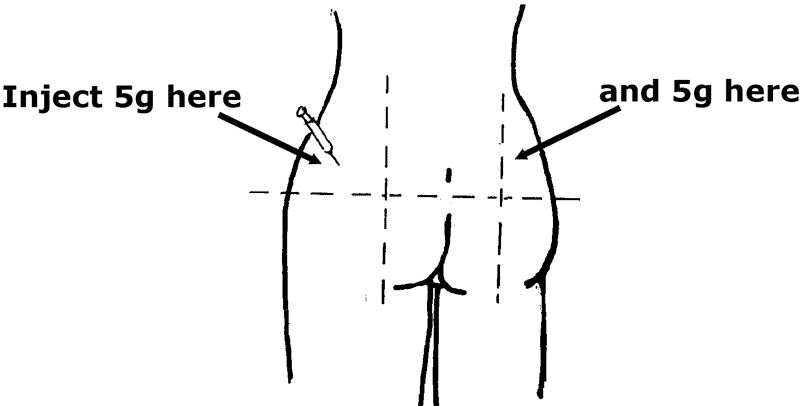

{% set pagetitle = "How to give<br>magnesium sulfate" %}
{% set seq_length = 2 %}
{% set seq_position = 2 %}
{% set seq_llink = "How_to_give_magnesium_sulfate1.html" %}		## set rlink equal to next page href
{% set seq_rlink = "javascript:;" %}		## set llink equal to previous page href
{% extends "templates.jinja/base.page-with-sequence.html" %}
{% block title %} Hesperian - Pregnancy &amp; Birth{% endblock %}
{% block id %}How_to_give_magnesium_sulfate2{% endblock %}

		{% block content %}
			<p>Give 10 g of magnesium sulfate 50% by injecting 5g injected deeply in each buttock.</p>
			<div class="hm-horizontal-center">
				
			</div>
		{% endblock %}
		{% block footer %}
			<div class="hm-content-relatedlinks">
				<span class="hm-content-strong">Related information:</span>	
				<a href="Severe_pre-eclampsia.html" rel="external" data-role="button" data-theme="c">If she has severe pre-eclampsia</a>
				<a href="Seizures_during_pregnancy.html" rel="external" data-role="button" data-theme="c">If she has a seizure</a>
				<a href="Bleeding-After_Birth.html" rel="external" data-role="button" data-theme="c">Heavy bleeding after birth</a>
			</div>
		{% endblock %}

